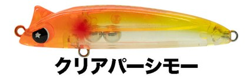
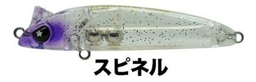
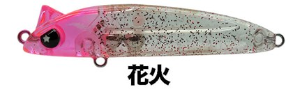
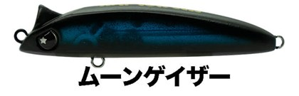

ラプター50SS
（RAPTOR50SS）
ラプター50SS（RAPTOR50SS）はLEGARE（レガーレ）のスローシンキングミノーです。
流れを感じる。でも動きすぎない。主なターゲットはメバルです。
FIELD STAFF 柿本岳志さんが完全監修した「先発完投型」のメバルプラグ。小型ボディの中にマグネット移動重心システムを採用し、稼いだ飛距離を活かせる立ち上がりの良さと、ロール中心の食わせのアクションを両立しています。

画像出典:LEGARE公式HP
スペック
- メーカー
- LEGARE（レガーレ）
- タイプ
- スローシンキング
- 全長
- 50mm
- 重量
- 2.9g
- フック
- #14
- リング
- #1
- アクション
- タイトローリング
- 搭載システム
- マグネット移動重心
- 監修
- 柿本岳志
- 価格
- 1,540円
▼今すぐチェック

ラプター50SSの特徴
遠くの流れを感じて、確実に食わせる「サーチ＆キャッチ」系
-
マグネット移動重心
広く探るフルキャストではウェイトが移動して飛距離を稼ぎ、近距離を攻めるショートキャストではウェイトを移動させずに素早く立ち上がる。
-
動きすぎないロールアクション
流れを感じながらも動きすぎない、タイトなローリングでメバルに口を使わせる。
-
メバルの名手が監修
ベイトタックルでメバルプラグからシーバスルアーまで操る柿本岳志さんが、経験と現場での実績をもとに作ったルアー。
ラプター50SSの使い方
基本はスローのただ巻きです。遠くの潮目や流れの変化にフルキャストし、流れを感じながらゆっくり巻いてきます。
近くを攻める時はショートキャストで。ウェイトが移動しないので、着水からすぐに泳ぎ始めます。
ラプター50SSの得意な状況
潮の流れがある堤防や磯など、流れの中にいるメバルを狙う時が得意です。
1本で遠くも近くも探れるので、最初に投げて魚を探す「先発」にも向いています。
ワンポイント
同じ柿本岳志さん監修のシーバス用ミノー、ラプター90SSの弟分のようなモデル。どちらも「流れを感じて食わせる」コンセプトです。
オススメカラー
ラプター50SSは全11色。そのうち4色を紹介します（画像は公式のカラーチャートより）。

クリアパーシモーまず1つ選ぶならこの色。透け感のあるオレンジ系。

スピネルクリアボディにパープルのヘッド。スレた魚に。

花火ピンクのクリアにラメ入り。

ムーンゲイザー黒とブルーのダーク系。シルエットを見せたい時に。
画像出典:LEGARE公式HP
ラプター50SSに似ているルアー
-
 ラプター90SS
レガーレ
詳細はこちら＞
ラプター90SS
レガーレ
詳細はこちら＞
同じ柿本岳志さん監修のシーバス用スローシンキングミノー。
-
 シュリペン55
レガーレ
詳細はこちら＞
シュリペン55
レガーレ
詳細はこちら＞
同じレガーレのメバルプラグ。表層をスローに攻めたい時に。
-
 ミニマルエボロジー
BREADEN
詳細はこちら＞
ミニマルエボロジー
BREADEN
詳細はこちら＞
トップからボトムまで攻められるエギ型のライトゲームプラグ。